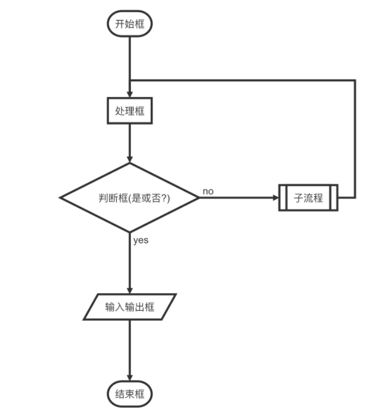
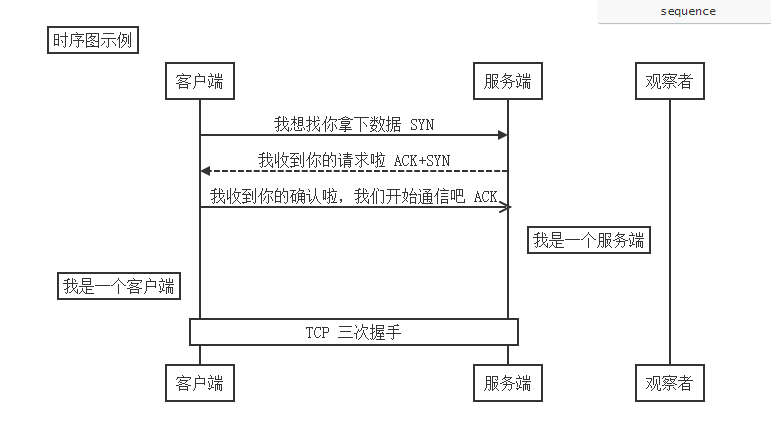
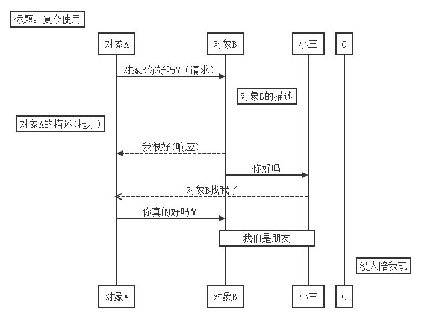

5. 如何用markdown 画流程图
5.1. Introduce
利用markdown画流程图是比较方便的，但是暂时还不支持github显示，不过最近用起来写代码流程图的时候极其方便，当然如果你需要画专业一点的流程图的话，可能visio和xmind是比较好的选择。
这边我记录一下流程，我觉得markdown比较适合于自己对一些代码流程不是特别清晰的，需要把代码逻辑理清楚的情况：
一共流程图有三种：
flow 流程图（flowchart）这种写代码流程用的比较多
sequence流程图 这种蓝牙中用的比较多
mermaid流程图，这种能画的就比较多了，分样式流程图和样式时序图，也可以画甘特图
5.1.1. flowchart
这种一般有基本判断的需要用直线连起来的。
先看下文本下面的内容：这个需要用源码形式粘贴，类似于插入code代码段的格式。关键字在flow
```flow
st=>start: 开始框
op=>operation: 处理框
cond=>condition: 判断框(是或否?)
sub1=>subroutine: 子流程
io=>inputoutput: 输入输出框
e=>end: 结束框
st->op->cond
cond(yes)->io->e
cond(no)->sub1(right)->op
```
这个时候我们可以看到下面的图

语法规则：
上面用来定义流程图元素的，相当于c语言中的变量定义
后面部分用来连接的流程图走向的
定义元素的语法规则
tag=>type: content:>url
上面这段例程就是这段
st=>start: 开始框
op=>operation: 处理框
cond=>condition: 判断框(是或否?)
sub1=>subroutine: 子流程
io=>inputoutput: 输入输出框
e=>end: 结束框
说明：
tag就是一个命名，或者是一个简称，需要唯一性一般为缩写
type用来定义标签类型，由于名称任意指定，则需要用type类指定，相当于关键字，c语言里面的类型
type类型有： start end operation subroutine condition inputoutput
content 是图片中显示的文字，特别注意，冒号和文本之间一定有个空格
url是个超链接，可以点击图片直接跳转到超链接，写法如下：
st=>start: 开始框 :>http://www.baidu.com
链接流程图元素
后面代码：
st->op->cond
cond(yes)->io->e
cond(no)->sub1(right)->op
这样看就简单多了，直接用->来连接的，有几点说明：
使用-> 来连接连个元素
condition类型后面跟yes和no两个分支，
每个元素可以指定分支走向有四种 left right top bottom
参考网址https://github.com/adrai/flowchart.js
5.1.2. sequence
Title:标题：指定时序图的标题Note direction of 对象:描述： 在对象的某一侧添加描述，direction可以为right/left/over，对象可以是多个对象，以,作为分隔符participant 对象：创建一个对象loop...end：创建一个循环体对象A->对象B:描述
： 绘制A与B之间的对话，以实线连接
->实线实心箭头指向-->虚线实心箭头指向->>实线小箭头指向-->>虚线小箭头指向
例子：
```sequence
Title:时序图示例
客户端->服务端: 我想找你拿下数据 SYN
服务端-->客户端: 我收到你的请求啦 ACK+SYN
客户端->>服务端: 我收到你的确认啦，我们开始通信吧 ACK
Note right of 服务端: 我是一个服务端
Note left of 客户端: 我是一个客户端
Note over 服务端,客户端: TCP 三次握手
participant 观察者
样子：

再看一个复杂的应用
```sequence
Title: 标题：复杂使用
对象A->对象B: 对象B你好吗?（请求）
Note right of 对象B: 对象B的描述
Note left of 对象A: 对象A的描述(提示)
对象B-->对象A: 我很好(响应)
对象B->小三: 你好吗
小三-->>对象A: 对象B找我了
对象A->对象B: 你真的好吗？
Note over 小三,对象B: 我们是朋友
participant C
Note right of C: 没人陪我玩
```
图片

5.1.3. mermaid
mermaid相当于新的流程图了，包含了上面两种，可以说比较全面了
这个语法相当的博大精深，这边我就不具体的介绍了，感兴趣的可以参考下面的连接，还是挺复杂的。不过简单用用也是挺方便的。
推荐一个在线编辑的网址，也有很多样例，可以玩玩：
参考自： https://mermaidjs.github.io/ [markdown 中流程图详解]https://blog.csdn.net/suoxd123/article/details/84992282